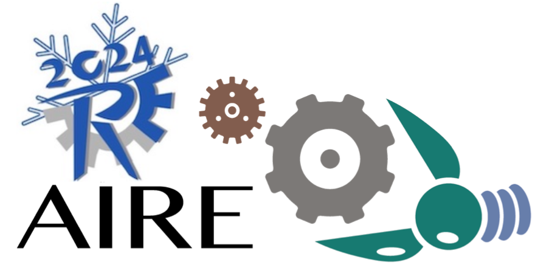

Chetan's research interests include software engineering, requirements engineering, applied natural language processing and machine learning, and Internet of Things. He has a Ph.D. degree from the University of Luxembourg, Luxembourg, and has published several papers in prestigious software engineering conferences and journals.

Organizing Committee
-
Chetan Arora, Monash University, Australia
-
Fatma Başak Aydemir, Boğaziçi University, Turkey
 Başak leads the requirements engineering group Boğaziçi University and is an active researcher in RE. Her research focuses on applying artificial intelligence methods to increase the efficiency of requirements engineering processes and artifacts. She has a Ph.D. degree from University of Trento, Italy, and has been involved in several international conferences and projects. She served as a co-organizer for AIRE in 2020.
Başak leads the requirements engineering group Boğaziçi University and is an active researcher in RE. Her research focuses on applying artificial intelligence methods to increase the efficiency of requirements engineering processes and artifacts. She has a Ph.D. degree from University of Trento, Italy, and has been involved in several international conferences and projects. She served as a co-organizer for AIRE in 2020. -
Julian Frattini, Blekinge Institute of Technology, Sweden
 Julian Frattini is a Ph.D. student under the supervision of Daniel Mendez. He is actively researching in the area of requirements quality for which he often employs AI and NLP techniques to automate quality assurance tasks. He serves in the organizing committee of RE'24 and REFSQ'24 and co-organizes the AIRE and CrowdRE workshop.
Julian Frattini is a Ph.D. student under the supervision of Daniel Mendez. He is actively researching in the area of requirements quality for which he often employs AI and NLP techniques to automate quality assurance tasks. He serves in the organizing committee of RE'24 and REFSQ'24 and co-organizes the AIRE and CrowdRE workshop.
Program Committee
To be announced. Let us know in case you are interested via .